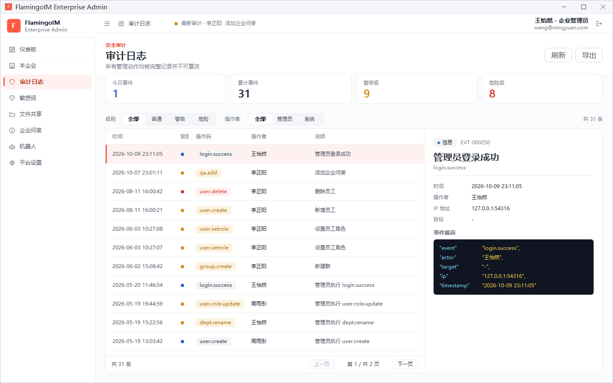
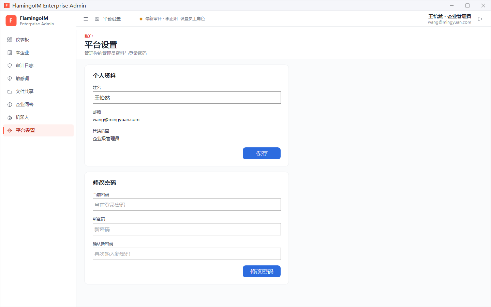

审计日志与平台设置
在管理控制台里做的每一项管理操作都会记入审计日志，方便事后追查「谁在什么时候做了什么」。本章介绍如何筛选、查看和导出审计日志，以及如何在平台设置里修改自己的姓名和登录密码。
- 适用：企业管理员
- 位置：左侧导航「审计日志」「平台设置」
审计日志
点左侧导航的 审计日志。页面标题下方写明「所有管理动作均被完整记录并不可篡改」：审计记录只能查看和导出，不能修改或删除。

统计与筛选
- 统计卡：今日事件、累计事件、警告级、危险级。
- 级别：全部、普通、警告、危险。只想看删除员工这类高风险操作时，选「危险」。
- 操作者：全部、管理员、系统，区分管理员手动做的操作和系统自动产生的记录。
- 筛选栏右侧显示符合条件的记录总数，例如「共 31 条」；列表底部用 上一页、下一页 翻页。
记录列表与详情
列表各列依次是 时间、级别（圆点颜色：蓝色为普通，橙色为警告，红色为危险）、操作码、操作者 和 说明。操作码是这类操作的英文编号，下表列出几个常见的例子：
| 操作码 | 说明 |
|---|---|
login.success | 管理员登录成功 |
user.create / user.delete | 新增员工 / 删除员工 |
user.setrole | 设置员工角色 |
group.create | 新建群 |
sensitive.add | 添加敏感词 |
qa.add | 添加企业问答 |
点选一条记录，右侧显示它的详情：顶部是级别标记（如「信息」「警告」）和事件编号（如 EVT-000250），下面是 时间、操作者、IP 地址、目标，以及 事件载荷，即这条记录的原始内容（JSON 格式）。
刷新与导出
点右上角的 刷新 重新读取最新记录。点 导出，会按当前选择的级别和操作者筛选条件，把记录保存为 CSV 文件（默认文件名「审计日志.csv」），可以用 Excel 打开。
从仪表板快速进入仪表板「近期审计」右上角的「查看全部 →」也会跳到这个页面；顶栏中间轮流显示的「最新审计 · …」则是最近几条记录的摘要。
平台设置
点左侧导航的 平台设置，管理你自己的管理员资料与登录密码：

个人资料
姓名 可以修改，改好后点 保存。邮箱（即登录账户）和 管辖范围 只能查看：企业管理员的管辖范围显示「企业级管理员」，平台超级管理员显示「平台超级管理员」。
修改密码
- 在 当前密码 中输入现在的登录密码。
- 在 新密码 和 确认新密码 中输入两次相同的新密码。
- 点 修改密码，成功后提示「登录密码已修改」。
三项都必须填写，两次输入的新密码不一致时不能提交。如果登录时勾选了「记住密码」，保存的密码会自动换成新密码，下次打开控制台不需要重新输入。
第一次登录后请修改密码你的初始密码是平台超级管理员创建账户时生成的，建议第一次登录后立即改成只有自己知道的密码。忘记密码时，请联系平台超级管理员处理。